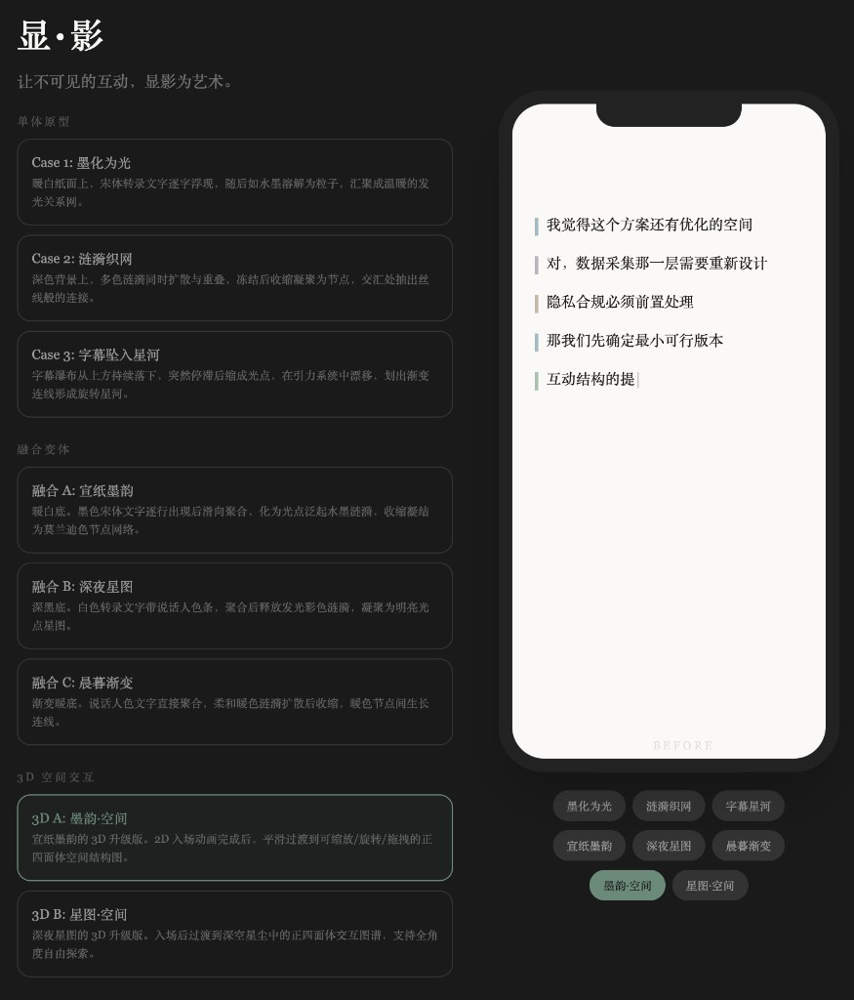
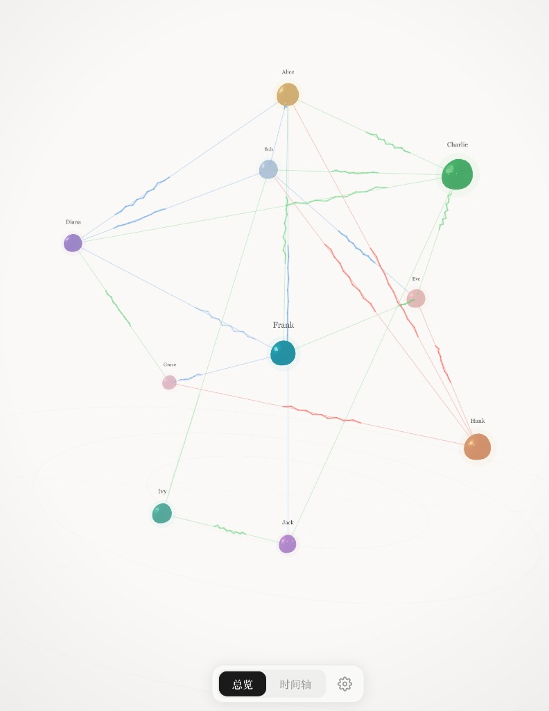

深圳大学传播学院
网络与新媒体专业本科毕业设计
个人研究报告
题目： ________________
姓名： 曹思越
学号： 2022080006
小组项目： ________________
指导教师： 李梓音
______年______月______日
深圳大学本科毕业论文个人研究报告
诚 信 声 明
本人郑重声明：所呈交的毕业设计个人研究报告，题目《 》是本人在指导教师的指导下，结合项目小组设计工作实践，独立进行研究工作所取得的成果。本报告与项目小组集体完成之设计项目相配合，报告所引述之相关资料及文献，均在报告中以明确方式说明。本人完全意识到本声明的法律结果。
作者签名：________________
日期：______年______月______日
1 引言
2 文献综述
2.1 AI编程范式的兴起与效率实证
2.2 影响AI代码生成质量的因素
2.3 非技术开发者实践研究的不足
3 研究方法
3.1 研究设计
3.2 数据收集
3.3 实践记录的组织方式
3.4 数据编码与分析
4 开发实践过程
4.1 技术选型与方案决策
4.2 如何让AI理解项目需求
4.3 从开发环境到真机部署
4.4 数据处理流程的设计
4.5 三维可视化的实现
4.6 AI生成偏差与修正经验
5 发现与讨论
5.1 不同任务中AI效率的差异
5.2 开发者角色的变化
5.3 对网络与新媒体专业的启示
6 结论
参考文献
致谢
英文摘要
【摘要】在生成式人工智能技术快速迭代的背景下，以自然语言交互为核心的氛围编程（Vibe Coding）范式正在改变软件开发的门槛与流程。本研究以传播艺术项目“显·影”应用的设计与开发过程为个案，采用行动研究与个案实践相结合的方法，记录并初步分析了一名网络与新媒体专业本科生如何借助AI代码编辑器（Cursor），通过人机协作完成从设计到可运行的苹果操作系统（iOS）应用的产品落地过程。研究基于28轮人机对话记录和12份技术计划文档，从技术选型、上下文供给、平台适配、数据处理和视觉实现五个方面归纳了开发过程中的做法与经验。在实践中笔者观察到，AI编程在界面搭建、接口对接等模式化任务中效率较高，但在系统架构决策、跨平台调试等需要全局判断的环节仍依赖开发者的介入。基于这次实践经历，笔者初步认为，当技术实现门槛被AI降低后，传播创意、用户洞察和审美判断在数字传播产品开发中可能会变得更加重要，这对网络与新媒体专业的学习与实践具有一定参考意义。
【关键词】氛围编程（Vibe Coding）；生成式AI；人机协作开发；数字传播产品；AI代码编辑器（Cursor）
2024年以来，大语言模型在代码生成领域的能力出现了显著提升。特斯拉前AI总监卡帕西（Andrej Karpathy）提出“氛围编程”（Vibe Coding）的概念后，一种新的编程方式引起了广泛关注：开发者通过自然语言向AI描述意图，由AI生成具体的代码实现[1]。这种方式使得软件开发的门槛发生了变化，过去需要多年计算机训练才能完成的工程任务，现在有可能由非技术背景的从业者通过人机协作来实现。
然而，氛围编程的实际效果和边界还不够清晰。已有研究主要集中在效率测量和提示词优化等方面[4][5]，而非计算机专业背景的开发者如何利用AI编程完成一个从概念到上线的完整产品，相关的深度个案还比较少[6]。数字传播领域的产品开发有其特殊性，因为它同时涉及技术实现、交互设计、用户体验和传播逻辑，对AI编程提出了更复合的要求。一个值得思考的问题是：当AI将技术门槛大幅降低之后，开发者的价值究竟体现在什么地方？
“显·影”是深圳大学传播学院的一项毕业设计项目，关注的问题是：在群体互动场景中，大量互动细节（谁在对谁说话、发言间的打断与沉默、语调变化与氛围转折等）难以被传统方式记录和复盘。项目希望将这些不易察觉的互动信息提取为结构化数据，并通过三维可视化的方式加以呈现，帮助用户直观地理解互动关系、强度和情绪氛围。笔者作为该项目的产品设计与技术开发负责人，需要将这一想法转化为一个可运行的苹果系统应用，覆盖从语音录制、数据处理到可视化生成的完整流程。作为网络与新媒体专业的本科生，笔者全程借助AI代码编辑器（Cursor），以氛围编程的方式完成了应用从设计到部署的技术工作。这一经历让笔者有机会从实践者的角度观察AI编程在真实项目中的表现和局限。
本研究希望通过“显·影”应用的开发实践，记录AI编程在数字传播产品开发各环节中的实际作用与不足，归纳人机协作中的一些做法和经验，为非技术背景开发者的AI协作路径和数字传播领域的实践教学提供参考。
---
围绕AI辅助编程的实际效率，学界已有一些初步共识：该技术对模式化任务的加速效果比较明显，但对需要全局判断的任务帮助有限。彭（Peng）等通过大规模对照实验发现，使用代码辅助工具（GitHub Copilot）的开发者完成编码任务的速度比未使用者快55.8%[7]；齐格勒（Ziegler）等对93万余名用户的追踪分析进一步显示，用户接受了近30%的AI代码建议，且普遍感到生产力有所提升，但研究同时指出，AI的价值主要在于提供“可迭代的起点”，开发者仍需在此基础上进行修正和完善[9]。
在编程范式层面，萨卡尔（Sarkar）和德罗索斯（Drosos）通过对8小时编程录像的框架分析，较为系统地描述了氛围编程的工作模式[1]。他们发现，开发者在“提示、评估、修正”三个阶段间反复切换，形成了一种“物质脱嵌”（material disengagement）的状态。所谓物质脱嵌，是与传统编程实践相对照的概念：在传统编程中，开发者直接编写和操控每一行代码，与代码高度耦合；而在氛围编程中，开发者通过自然语言与AI交互，不再直接编写代码，而是在更高的层面上进行指挥和判断，由此形成了一种与具体代码实现之间的“脱嵌”状态。这种脱嵌并非完全放手，而是一种选择性的监督，开发者在关键节点介入审查和决策，在常规环节则信任AI的输出[1]。赫姆德夫（Hemdev）的混合方法案例研究呼应了这一发现，指出开发者需要在“委托”与“控制”之间持续寻找平衡，过度依赖AI会导致代码库的架构一致性下降[6]。
影响AI代码生成质量的因素，已有研究从两个方向展开了探讨。裴（Bae）等在计算机安全领域的实验表明，采用链式思维（Chain-of-Thought）或基于角色设定（Persona-based）的结构化提示策略，能将大语言模型（GPT-4o）和克劳德3.5（Claude-3.5 Sonnet）的代码漏洞检测准确率提升15至25个百分点[5]。许翔和蔡宁楠从工程应用角度指出，AI输出中的“幻觉”问题，即生成看似合理却无法运行的代码，是实际开发中的主要风险，开发者需要有足够的判断力进行甄别[3]。
在设计稿到代码的转换环节，前端工具平台（Builder.io）的调研显示，79%的开发者反映将设计稿转化为代码需要超过一天的工作量，AI转换工具可将这一过程缩短50%至80%[10]。但多项研究共同指出了一个规律：AI生成内容的质量高度依赖输入的上下文质量，精确的技术规格和参考示例比修辞技巧更加有效[3][5][10]。
综合已有文献可以发现，当前研究主要以专业开发者为对象，多在受控实验环境中进行效率测量。余可然对AI代码编辑器的方法探索[4]和郭昱辰、赵欣对AI驱动原型设计的研究[2]虽然开始涉及设计领域，但都还停留在单一环节的分析上。至于非计算机背景的开发者如何利用AI编程，在真实项目中完成从概念设计到跨平台部署的完整产品落地，这方面的深度个案几乎是空白。此外，信息可视化学者凯罗（Cairo）提出的“功能优先于装饰”原则[12]和设计教育学者卢普顿（Lupton）与菲利普斯（Phillips）关于AI时代人类角色从“执行者”转向“策展者”的看法[13]，为本研究提供了传播学维度的参照，但尚未在AI编程的语境中得到检验。本研究试图从实践层面对上述不足做一些初步的补充。
---
本研究采用行动研究法与个案实践法相结合的方式。行动研究法强调研究者以实践参与者的身份介入过程，在“计划、行动、观察、反思”的循环中推进认知[11]。笔者既是“显·影”应用的开发者，也是开发过程的记录者和分析者，这种双重身份有助于捕捉AI编程实践中的具体决策过程，但也可能带来一定的主观性。
本研究的数据来源包括三个方面：
第一，人机对话记录。笔者使用AI编辑器进行了28轮人机协作对话，总计超过3000轮次交互。这些对话通过对话记录插件（SpecStory）自动保存为结构化文档，每轮对话时间从30分钟到6小时不等，涵盖需求描述、方案讨论、代码生成、错误调试和方案调整等过程。
第二，技术计划文档。开发过程中积累了12份技术方案文档，涵盖语音识别接入、数据标注平台集成、三维可视化方案、跨平台打包等模块。这些文档在开发过程中由AI辅助生成并经笔者审核确认。
第三，项目工程文件。包括完整的源代码（76个依赖包、9个页面组件）、架构文档和产品说明文档，为还原技术细节提供了客观支撑。
在回顾整个开发过程后，笔者按照实际工作的先后顺序和内容性质，将实践记录整理为五个方面：技术选型与方案决策、上下文供给方式、平台适配过程、数据处理流程设计、以及视觉实现。需要说明的是，这五个方面并非预先设定的理论框架，而是在开发完成后对实践经历的回顾性归纳，其组织逻辑参照了行动研究法中“按行动阶段梳理经验”的分析思路[11]。每个方面重点记录笔者的做法和思考、AI的实际表现以及两者之间的配合情况。
为了解人机协作的大致模式，笔者对28轮对话记录进行了回溯性编码，将每次交互按意图分为六类。编码结果如表1所示。
表1 对话交互类型统计
| 交互类型 | 占比 | 平均迭代轮次 | AI首轮可用率 |
|---|---|---|---|
| 界面调整 | 32% | 1.5轮 | 78% |
| 后端功能实现 | 24% | 3.2轮 | 45% |
| 错误调试 | 19% | 4.8轮 | 22% |
| 架构决策 | 11% | 5.5轮 | 15% |
| 文档查询 | 8% | 1.2轮 | 85% |
| 部署配置 | 6% | 3.0轮 | 35% |
（注：数据基于对28轮对话记录的回溯编码，“首轮可用率”指AI第一次生成即可直接使用的比例）
从这组数据可以初步看到，AI的首轮可用率与任务的模式化程度大致呈正相关。界面调整和文档查询等模式化程度较高的任务，首轮可用率超过78%；而架构决策和错误调试等需要更多全局理解的任务，首轮可用率不足25%。
---
“显·影”应用的产品目标是录制群体对话，将语音转化为结构化的互动数据，再生成三维可视化作品，帮助用户以直观方式理解群体互动中的关系和情感变化。用户的核心流程分为四步：录制对话、校对转写文本、AI辅助数据标注、生成三维可视化。围绕这条产品主线，笔者作为产品设计者和技术搭建者，需要完成五个技术模块的开发：前端界面（9个页面组成的移动端应用）、语音识别服务接入、数据标注流程、三维可视化引擎、以及苹果系统跨平台打包。以下分别记录这些模块在实际开发中的做法和经验。
在氛围编程中，AI已能较为高效地完成大部分代码编写工作，笔者感到自己的主要价值集中在技术方案的判断和选择上。在“显·影”应用的开发过程中，笔者做出了三项比较重要的决策，这些决策都需要对项目实际情况有整体了解，很难由AI独立完成。
第一项是技术栈选型。笔者最初向AI描述的需求是“一个手机端应用，能录音、转文字、生成可视化”。AI推荐了跨平台框架（React Native）方案，但在笔者补充“团队已有网页前端代码”这一信息后，AI调整建议为混合应用框架（Capacitor），即将现有网页应用桥接为原生应用，迁移成本最低。这个过程的实质是：笔者通过逐步补充项目约束（已有代码资产、团队技术偏好、时间成本），引导AI在可选方案中逐步收敛。
第二项是数据标注平台迁移。项目最初尝试使用飞书多维表格的AI字段进行自动标注，但实际接入中发现其认证流程复杂且AI字段触发不稳定。笔者随后将方案迁移至谷歌表格（Google Sheets），它的AI公式提供了更直接的大模型调用方式，团队成员也可以在浏览器中直观地校正标注结果。AI可以帮助实现任何一个方案的代码，但判断哪个方案更适合当前项目，仍然需要开发者自己来做。
第三项是双链路语音识别架构。项目采用火山引擎的语音识别服务，笔者设计了“流式+离线”互补架构：录制过程中使用流式识别提供实时字幕反馈，录制结束后使用离线识别获取精确结果和说话人分离。这一架构出于笔者对产品体验的考虑，其中实时性满足录制时的反馈需求，精确性满足后续数据分析的需求。
图1 系统架构图
技术方案确定之后，接下来面对的问题是：如何让AI在具体编码中正确理解并执行这些决策？
在回顾28轮开发对话后，笔者发现一个经验：AI生成代码的质量很大程度上取决于开发者提供给AI的信息质量。学术研究关注链式思维等结构化提示技术[5]，但在实际工程中，笔者发现最有效的做法往往是直接向AI提供正确的技术文档、协议规格和代码示例。笔者将这些做法按类型整理为四种方式。
第一种是直接提供技术文档。当AI需要实现特定的外部接口时，最有效的做法是把官方文档中的技术规格直接提供给它。以语音识别服务的自定义二进制通信协议为例：笔者最初用自然语言描述需求，AI生成的代码存在格式错误，所有请求被服务端拒绝。随后笔者将协议规格表（包括每个字段的位置、宽度和编码方式）逐字提供给AI，AI据此生成了完全正确的实现。这个经验说明，精确的技术规格比提示词技巧更有用。
第二种是提供参考示例。当AI需要理解抽象的设计意图时，具体的参考示例比语言描述更高效。在界面开发中，设计工具（Figma Make）导出的代码质量很低（绝对定位、无语义类名），无法直接使用。笔者的做法是将其作为“参考”：把导出的代码和设计稿截图同时提供给AI，让AI从中提取视觉参数（颜色值、间距、字号），再用项目的技术栈重新实现。在界面风格调优时，笔者还引入了业界优秀产品的页面截图作为视觉参考，同时为AI编辑器安装了专门的界面设计技能扩展，让AI在生成界面时自动遵循设计规范。这些做法的本质是同一个思路：将AI不能直接使用的素材转化为它可以学习的示例。
第三种是在每轮对话开头重申项目约束。在较长的对话中，AI会逐渐“遗忘”早期建立的技术约定。笔者的做法是在每轮新对话的开头，以结构化文本重申项目的技术栈、架构规范和已有组件清单，相当于为AI维护一份持续更新的“项目手册”。
第四种是沙箱隔离开发。对于视觉效果等不确定性较高的模块，笔者的做法是创建独立的隔离测试环境，在其中让AI尝试多种方案，从中筛选效果较好的再移植到主项目。这样做是为了避免一个风险：如果直接在主项目中让AI反复修改和回撤，可能会连带损坏其他已完成的功能。隔离环境将试错成本限制在独立空间中，既允许自由探索，又保护了主项目的稳定性。三维可视化模块就是通过这种方式开发的：笔者先在隔离目录中测试了多种视觉风格和交互方案，选定效果最好的方案后才整合到正式代码中。
表2 四种常用的上下文供给方式
| 方式 | 适用场景 | 说明 |
|---|---|---|
| 提供技术文档 | 外部接口和协议实现 | 将官方文档的技术规格直接提供给AI |
| 提供参考示例 | 设计意图和视觉风格 | 将低质量素材转化为AI可学习的示例 |
| 重申项目约束 | 长对话中保持一致性 | 每轮新对话开头重申技术栈和规范 |
| 沙箱隔离开发 | 不确定性较高的模块 | 在隔离环境中试错，保护主项目 |
AI生成的代码在开发环境中运行正常，但部署到真实设备时，往往会遇到AI难以感知的平台差异和安全限制。在“显·影”的开发中，这个环节消耗了大量调试精力，也是AI首轮可用率最低的地方。
最典型的例子涉及浏览器安全限制。语音识别服务要求在网络连接建立时携带认证信息，但浏览器出于安全考虑禁止了这一操作。AI最初生成的方案在桌面开发环境中可行，但在浏览器中被自动忽略。笔者向AI描述这一差异后，AI提出了中间代理方案，由服务端代为完成认证。然而，这个方案在移动端又引发了新的问题：打包后的苹果系统应用中没有服务端运行环境。经过三轮方案调整，最终确定了按平台分流的策略。
图2 平台适配分流架构
这种“问题、方案、新问题、再调整”的过程历时两天。AI在每一轮中都能给出技术上可行的局部方案，但将局部方案整合为跨平台一致的架构需要开发者保持全局视角。跨平台部署中还涉及许多操作性问题：屏幕安全区域适配、应用签名配置、开发者证书过期处理等。这类问题的共同特点是它们属于实际部署中的边缘情况，AI在开发者准确描述现象后能给出有效的指引。
平台适配打通了应用在不同环境下的基础运行能力，下一步是构建产品的核心功能，即将原始语音数据加工为可供可视化使用的结构化信息。
“显·影”的产品核心是一条将群体对话录音转化为互动可视化作品的数据处理流程。这条流程的设计反映了数字传播产品的一个基本问题：技术只是手段，“将什么信息以什么方式呈现给用户”才是要回答的核心问题。
笔者设计了一套包含16个字段的数据结构：10个基础特征字段（发言内容、说话人、时间戳、时长、性别、情绪、语速、音量等）由语音识别引擎直接输出或通过简单计算得到；6个语义标注字段（对谁发言、对话情绪、是否被打断、互动类型、话题标签、对话转折点）则需要通过AI或规则推理进行填充。
在标注方案上，笔者采用了“双层容错”的做法：第一层利用谷歌表格的AI公式进行语义分析自动标注，第二层在代理服务器中实现了基于规则的推理引擎作为备选。之所以这样设计，是因为测试中发现AI公式存在工程化限制，即通过接口写入的公式无法自动触发计算，需要用户在浏览器中手动打开才会激活。规则推理层确保了即使AI服务不可用，数据处理仍能继续运转。这种“主方案+备选方案”的容错思路，是笔者根据实际测试中遇到的问题主动提出的，AI在这方面倾向于给出单一方案，较少主动考虑方案失效后的备选路径。
从原始字段到可视化元素的映射设计，需要考虑传播效果。信息可视化理论强调视觉编码应利用人类的感知直觉[12]：情绪基调映射为连线颜色（绿色积极、红色消极、蓝色中性），借用了色彩心理学中的常见联想；音量映射为连线粗细，利用了视觉重量的隐喻；对话转折点触发涟漪特效，通过突然的视觉变化传达氛围的转换。这些映射是笔者基于产品理解设计的，AI负责具体的技术实现。
图3 端到端数据流
数据处理流程产出了包含16个字段的结构化对话数据，最后一步是将这些数据转化为用户可以感知的三维可视化作品，这也是“显·影”作为传播艺术项目的最终呈现。
可视化模块的目标是将结构化数据转化为三维交互图谱，让用户以直观的方式观察群体互动的结构、强度和情感色彩。每位参与者呈现为一个节点，发言连接呈现为带有方向和色彩的光束，粒子沿连线流动形成动态的“对话风暴”效果。
这一模块的开发用到了前面提到的沙箱隔离方式。笔者先在独立的测试目录中进行视觉风格探索：向AI提供参考网站的截图，并用意象性词汇描述期望效果。AI在这一环节展现了将抽象的视觉意象转化为具体技术参数的能力，笔者无需指定渲染引擎的具体参数，只需描述“深空网络”“柔和光晕”等意象，AI即可生成对应的视觉方案。经过多轮探索和筛选，项目最终确定了两套视觉风格：一套偏向科技感的锐利风格，一套偏向自然感的柔和风格，用户可根据数据特征和表达意图进行切换。确认效果满意后，笔者才将代码移植到主项目中。
此外，笔者设计了三种交互模式，分别是焦点模式让研究者聚焦特定参与者的互动网络，时间轴过滤支持对比不同时段的对话结构变化，关系过滤允许观察选定人员之间的互动流。这些交互设计基于笔者对产品使用场景的理解，具体的渲染实现则由AI完成。
| 图4a 沙箱隔离环境中的视觉风格探索 | 图4b 最终选定的三维互动可视化效果 |
 |
 |
在开发实践中，笔者逐渐积累了一些应对AI生成偏差的经验。
AI的“审美偏差”是一个比较突出的问题。在要求AI优化界面时，AI倾向于添加大量渐变、阴影和装饰性动画，形成看似精美但缺乏克制的视觉风格。字体体系的调整是一个典型例子：AI的初始方案在所有页面使用衬线字体，视觉上有设计感，但在移动端小字号下中文可读性很差。笔者参考了一些优秀产品的字体策略，确立了“衬线体仅用于品牌标题，正文使用无衬线体”的分层体系，经历四轮迭代才完全统一。这个经历让笔者意识到，开发者需要建立明确的设计标准并反复向AI重申，否则AI的默认输出会逐渐偏离产品的设计一致性。
AI生成不存在的接口参数同样带来了不少调试成本。在语音识别接入过程中，AI生成了一个看似合理但实际不存在的功能参数，语法完全正确，只有在实际调用被服务端拒绝后才能发现。笔者此后的做法是：对于所有涉及外部服务的代码，一律对照官方文档逐一核实AI生成的接口调用方式，将“信任但验证”作为基本的协作原则。
---
基于表1的对话编码数据，AI编程在不同任务类型中的效率表现差异较大。界面搭建类任务的AI首轮可用率高达78%，估计节省了大部分的开发时间，这与彭（Peng）等关于代码辅助工具效率的实证结论基本一致[7]。而架构决策类任务的首轮可用率仅为15%，平均需要5.5轮迭代。
从AI的能力特点来看，这一差异可能与任务性质有关。AI擅长模式匹配和知识检索，当任务可以归结为“在已有模式中找到最匹配的实现”时表现较好；但当任务需要在多个约束条件之间做权衡（如技术选型、数据标注平台迁移）时，AI由于缺乏对项目全局状态的持续感知，较难给出最合适的方案。不过，笔者的观察基于单一项目的回溯编码，这些差异背后是否存在更普遍的规律，还需要更多的研究来验证。
萨卡尔（Sarkar）和德罗索斯（Drosos）提出的“物质脱嵌”概念[1]，即开发者不再直接编写代码，而是在更高层面指挥AI，在笔者的实践中呈现出一些值得注意的差异。
在代码层面，脱嵌是比较彻底的。笔者在整个开发过程中几乎没有使用浏览器调试工具进行断点调试，也很少逐行阅读AI生成的代码。“描述问题、AI生成修复、运行验证”的循环构成了日常工作的基本节奏。
但在架构层面，过度脱嵌会带来风险。涉及系统级决策时，例如选择什么技术栈、设计怎样的容错架构、如何在多个平台间分流，笔者必须跳出AI生成的具体代码，从项目整体的约束条件出发进行判断。AI缺乏对团队能力、时间成本、平台限制和产品优先级的持续了解，这些决策无法完全交给AI。从这个角度看，氛围编程中开发者的角色可能更接近“技术产品经理”，核心能力在于做出合理的判断和取舍。
笔者在实践中还体会到，非技术背景的开发者使用氛围编程时，有三项能力比较重要：一是问题拆解能力，即将模糊的需求拆解为AI可以理解的具体指令；二是错误诊断能力，即从运行错误中提取关键线索并补充上下文反馈给AI；三是方案判断力，即在AI给出多个方案时评估哪个更适合当前的项目情况。这三项能力都来源于对项目整体的了解，而非编程技术本身。
笔者在这次实践中感受到一个变化：当AI将技术实现的门槛降低之后，开发数字传播产品时，技术能力本身的重要性可能会相对下降，而传播设计方面的能力可能会变得更加突出。
在“显·影”的开发中，AI较为高效地处理了界面搭建、接口对接、数据格式转换等技术性工作，但以下环节始终由笔者主导：产品方向的确定、数据字段体系的设计、视觉映射中对传播效果的考虑、以及用户体验的审美把控。这些环节的共同特点是：它们需要回答的是“用什么方式向谁传达什么信息”这一传播学层面的问题。
设计教育学者卢普顿（Lupton）和菲利普斯（Phillips）指出，在AI辅助创意工作中，人类的角色正从“执行者”转向“策展者”，即决定什么值得被创造、以什么方式被呈现、为谁服务[13]。笔者的实践经历与这一看法有一定呼应：在氛围编程的背景下，网络与新媒体专业学生的竞争力可能更多地体现在是否具备清晰的传播设计思维，即能否提出值得解决的问题、设计合理的信息架构、并在AI生成的众多方案中做出符合传播逻辑的选择。
---
本研究通过“显·影”应用的开发实践，从技术选型、上下文供给、平台适配、数据处理和视觉实现五个方面，记录和梳理了AI编程在数字传播产品开发中的实际表现。
在实践中笔者观察到，氛围编程确实在较大程度上降低了软件开发的技术门槛，使非技术背景的开发者能够完成从设计到部署的产品落地。但AI编程并非全自动化的过程，开发者的价值主要体现在技术方案的判断和选择上。笔者归纳的四种上下文供给方式（提供技术文档、提供参考示例、重申项目约束和沙箱隔离开发）是在实践中逐步摸索出的做法，可以为类似背景的开发者提供一些参考。同时，AI效率在不同任务类型中的差异，即模式化任务效率较高而决策性任务效率较低，也是一个值得关注的现象。
本研究存在以下局限：第一，作为单一个案，结论的适用范围有限；第二，笔者同时是研究者和开发者，可能存在主观性偏差；第三，对话编码中的首轮可用率基于回溯评估，缺乏实时记录的精确性。未来研究可以扩大样本量对比不同AI工具的效率表现，引入更客观的代码质量指标进行评估，以及探索AI编程在传播学、设计学等非计算机专业教学中的应用可能。
---
参考文献
[1] Sarkar A, Drosos I. Vibe coding: programming through conversation with artificial intelligence[J]. arXiv preprint arXiv:2506.23253, 2025.
[2] 郭昱辰, 赵欣. 基于生成式AI驱动的产品概念原型设计[J]. 鞋类工艺与设计, 2025, 5(14): 33-35.
[3] 许翔, 蔡宁楠. 信息化产品智能化设计与开发中人工智能技术的应用研究[J]. 科技资讯, 2025, 23(20): 94-96.
[4] 余可然. 基于人工智能代码编辑器编写软件的方法探索[J]. 通讯世界, 2025, 32(06): 184-186.
[5] Bae J, Kwon S, Myeong S. Enhancing software code vulnerability detection using GPT-4o and Claude-3.5 Sonnet: A study on prompt engineering techniques[J]. Electronics, 2024, 13(13): 2657.
[6] Hemdev N. VIBECODING: A mixed-methods case study on conversational AI programming and application development[J]. IJSAT-International Journal on Science and Technology, 2025, 16(3).
[7] Peng S, Kalliamvakou E, Cihon P, et al. The impact of AI on developer productivity: Evidence from GitHub Copilot[J]. arXiv preprint arXiv:2302.06590, 2023.
[8] Cisco. GitHub Copilot productivity study: Real-world impact analysis[R]. Cisco DevOps Report, 2024.
[9] Ziegler A, Kalliamvakou E, Li X A, et al. Measuring GitHub Copilot's impact on productivity[J]. Communications of the ACM, 2024, 67(3): 54-63.
[10] Builder.io. Introducing Visual Copilot: A better Figma-to-code workflow[EB/OL]. https://builder.io/blog/figma-to-code-visual-copilot, 2024.
[11] 陈向明. 质的研究方法与社会科学研究[M]. 北京: 教育科学出版社, 2000.
[12] Cairo A. The functional art: An introduction to information graphics and visualization[M]. Berkeley: New Riders, 2013.
[13] Lupton E, Phillips J C. Graphic design: The new basics (revised and expanded)[M]. New York: Princeton Architectural Press, 2015.
致谢
感谢指导教师李梓音老师在选题设计与研究方向上的悉心指导。感谢“显·影”项目团队成员在产品定义、视觉设计和用户测试中的协作支持。最后，感谢深圳大学传播学院为本次毕业设计提供的实践平台和学术资源。
【Abstract】Against the backdrop of rapidly evolving generative AI, the emerging "Vibe Coding" paradigm — centered on natural language interaction — is fundamentally reshaping the accessibility and workflow of software development. This study examines the full design-to-deployment process of "Xianying," a communication art project App, through action research combined with case practice methodology. It documents and analyzes how an undergraduate student majoring in Network and New Media leveraged the AI code editor Cursor to build a functional iOS application through human-AI collaboration. Based on 28 complete dialogue sessions and 12 technical planning documents, the study distills collaborative strategies across five dimensions: system design decisions, context engineering, platform adaptation, data pipeline construction, and visual expression. The findings reveal that AI programming significantly accelerates pattern-based tasks such as UI development and API integration, while remaining dependent on developer judgment for architectural decisions, cross-platform compatibility, and communication design logic. The study further proposes that as AI lowers the implementation barrier, the core competitiveness of digital communication products is shifting toward communication creativity, user insight, and aesthetic judgment.
【Key words】Vibe Coding; Generative AI; Human-AI Collaborative Development; Digital Communication Product; Cursor